Endometrial Lesions
On This Page
Hormones and Endometrial Changes
- Histologic examination of the endometrium is done to:
- Determine hormone status
- Document ovulation
- Determine cause of infertility
- Assess cause of abnormal uterine bleeding
- Biopsy is done with dilation and curettage procedure
- Lining of endometrium is removed
- The process of assessing endometrium is referred to as "dating"
Direct Sampling of Endometrium
- Cytology has found limited success in comparison to biopsy
- Diect sampling cytologically (brushing) is most common method used for screening endometrial carcinoma in Japan
- Patterns based on architecture and nuclear features
Endometrial Cells
- History is curcial when determining presence of endometrial lesions
- Incidence of lesions increase with age
- Naturally exfoliated cells observed up to day 12 of cycle
- Cells observed out of cycle in women under 40 not associated with pathology
- Benign appearing cells in women over 40 associated with endometrial polyps and hormone replacement therapy
- Bethesda recommends reporting finding benign appearing endometrial cells in women over 45 without regard to mentrual status
Hormonal Cycle and Endometrium Histology
- Proliferative phase (Day 7-13)
- Rapid growth of glands and stroma
- Proliferation stops at ovulation
- Estrogen strough stroma initiates proliferation
- Straight tubular glands lined by regular, tall, pseudostratified cells
- Mitosis is numerous
- Stroma also proliferates
- Spindly cells with scanty cytoplasm
- Proliferative Endometrium
- Cells clumps with tubes and/or sheets
- Narrow straight tube, width does not vary by more than 0.2mm
- Ovoid to columnar cells with pseudostratification and dense cytoplpasm
- Abundant stroma in background
- Capillaries observed in stroma
- More separation of glands and stroma on LBP
- Open chromatin and prominence to nucleoli
- Early Secretory Phase (Day 15-25)
- Secretory vacuoles develop below nucleus
- Secretory activity more dominant during 3rd week
- Glands dilated by day 24
- Take on saw tooth appearance
- Shrink when production of glycogen and mucus are exhausted
- Secretory Endometrium
- Tubular glands
- Maximum diameter no greater than 2x minimum diameter of tube
- Honeycomb sheets of cells
- Well defined cytoplasm and abundant clear cytoplasm
- Late Secretory Phase (Day 25-28)
- Progesterone effect impacts stroma
- Pre-decidual changes: Cells have increased mitosis, stroma atrophy, cells have increased eosinophilia
- Neutrophils and lymphocytes spread throughout stroma (arrows)
- Menstrual Phase (Day 1-6)
- Drop in progesterone
- The superficial portion of endometrium is also called functionalis
- Functionalis breaks down, stroma breaks down and sheds
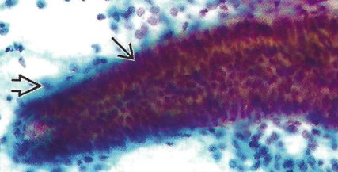
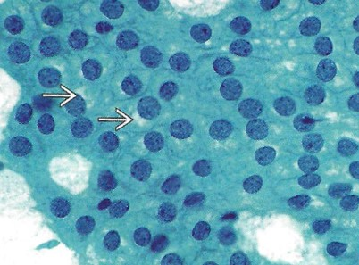
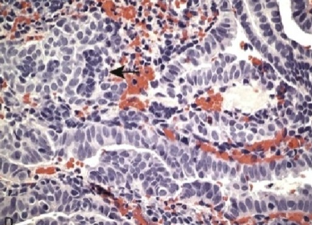
Benign Conditions
Dysfunctional Uterine Bleeding
- Bleeding out of cycle
- Caused by a variety of factors but typically hormone related
- Endometritis: acute (bacteria) or chronic infection (PID-chlamydia, IUD use)
- Endometrial polyps
- Fibroid below the mucosa (submucosal leiomyoma)
- Endometrial neoplasms (benign or malignant)
- Most common cause is anovulation associated with perimenopause
- Anovulation associated with endocrine disease, functioning ovarian tumors and disturbances in metabolism (obesity, malnutrition)
Causes of Dysfunctional Uterine Bleeding by Age
| Age Group | Causes |
|---|---|
| Prepuberty | Precocious puberty (hypothalamic, pituitary, or ovarian origin) |
| Adolescence | Anovulatory cycle, coagulation disorders |
| Reproductive age |
Complications of pregnancy (abortion, trophoblastic disease, ectopic pregnancy) Anatomic lesions (leiomyoma, adenomyosis, polyps, endometrial hyperplasia, carcinoma) Anovulatory cycle Ovulatory dysfunctional bleeding (e.g., inadequate luteal phase) |
| Perimenopausal |
Anovulatory cycle Anatomic lesions (carcinoma, hyperplasia, polyps) |
| Postmenopausal |
Endometrial atrophy Anatomic lesions (carcinoma, hyperplasia, polyps) |
Endometriosis and Adenomyosis
- Cause of infertility, pain, and dysmenorrhea (menstrual pain)
- Endometriosis: the presence of ectopic endometrial tissue (glandular and stromal) outside the uterus
- Bleeds during menstrual cycle
- Adenomyosis: presence of ectopic endometrial tissue inside myometrium
- Endometrial tissue makes its way to pelvis, tubes and ovaries, colon, bladder, and more uncommonly lymph nodes and lungs
- Ovaries produces cysts called "chocolate cysts"
- Contains old blood
- Pattern is similar to endometrial sampling
- Large tissue fragments (HCGs)
- Dark, pseudostratified nuclei
- Can mimic endocervical lesions
- Hemosiderin-laden macrophages and bloody background
- Progesterone's effect on endometrial glands
- Common in pregnancy
- Small, loose groups of cells
- Large, eccentrically placed, dark nuclei
- Cytoplasm is extremely vacuolated
- Similar findings as IUD changes
- Cells that have some, but not all, features of adenocarcinoma
- Criteria for atypical endometrial cells:
- Small endometrial type cells
- Small groups of cells (5-10 cells/group)
- Tightly cohesive HCGs, more clustered
- Nuclei are slightly enlarged
- Slightly more hyperchromatic nuclei
- More prominence to the nucleolus (especially on LBP)
- Increase in cytoplasm
- Increase in vacuolization
- Clean background
- Quantity and quality of cells is also key
- Must correlate with clinical history
- Primary history of PMB or DUB are key clinical presentations
- Shedding out of cycle must be evaluated
- Abnormal appearing endometrial cells in any age must be evaluated
- Changes are more subtle than endocervical changes
- Features of benign and neoplastic changes overlap clinically and cytologically
- Hyperplasia is a frequent precursor to endometrial adenocarcinoma
- Increased proliferation of glands in comparison to the amount of proliferation in stroma
- Associated with prolonged effect of estrogen on the endometrium
- Causes abnormal bleeding
- Molecular cause:
- Inactivation of PTEN tumor suppressor gene
- Conditions producing prolonged estrogen effect:
- Obesity-causes conversion of androgens to estrogens
- Menopause
- Polycystic ovarian syndrome
- Functioning granulosa ovarian tumors
- Excessive ovarian cortical function
- Prolonged estrogen replacement therapy
- Histologically, hyperplasia classified into simple and complex categories
- Direct correlation to cytologic patterns is challenging
- Simple hyperplasia is non-atypical
- Defined as an increase in gland-to-stroma ratio
- Glands with less stroma in between
- Glands are more crowded and distended
- In postmenopausal women, should be considered when benign appearing endometrial cells are found
- In menstruating women, clue is out of cycle bleeding
- Cytologically, endometrial cells appear completely normal
- Sign out: AGC, benign appearing endoemtrial cells in a postmenopausal woman. Suggest further evaulation to rule out hyperplasia/neoplasia
- Adenomatous hyperplasia is both glandular and stromal hyperplasia
- Glands are crowded and more stratified
- Nuclei are normal with coarse chromatin and uniform clumping
- Endometrial cells may appear enlarged with slight pleomorphism
- Overall benign appearing
- Sign out: AGC, more due to history of PMB or out of cycle bleeding
- Atypical hyperplasia demonstrates marked crowding and "back to back" glands
- Difficult to cytologically differentiate from adenocarcinoma
- Less stroma
- Glandular structures have infolding
- Increase in nuclear crowding and irregular gland outlines
- Commonly progresses to adenocarcinoma
- Cytologically shows pleomorphism among cells, with abundant, vacuolated cytoplasm
- Large nuclei with irregular clumping and prominent nuclei
- Sign out: AGC to ECA. Suspicious for Carcinoma.
- Biopsy is needed to differentiate from invasive carcinoma
- Most common invasive gynecologic malignancy
- Accounts for 7% of all invasive cancers
- Increasing in incidence
- Adenocarcinoma is more common in perimenopausal and postmenopausal years
- Postmenopausal bleeding raises concern for endometrial adenocarcinoma
- Rare below age of 40 years
- Cytology can only detect cells that are shed unless direct sampling is performed
- Pap test is not a reliable method of detection
- Vaginal pool and cervical canal aspirations increase chance of detection
- LBP increases the chance of detection and removes obscuring factors
- Type I and Type II clinically
- Type I is the most common and THE endometrial adenocarcinoma-80% cases
- Precursor is hyperplasia
- Occurs mid 50s to 60 year
- Most often well differentiated with better prognosis
- Type II patients-no risk factors
- Rarer than Type I
- Older and thin
- Multiparous
- Tumors arises spontaneously
- High grade and very aggressive
- Very poor prognosis
- Associated with p53 mutation
- Risk Factors for Type I Endometrial Adenocarcinoma
- Estrogen driven tumor- prolonged, unopposed estrogen
- Hormones, exogenous estrogen (ERT)
- Obesity-adipose tissue source of aromatase (Enzyme which converts androgens to estrogen)
- Hypertension
- Nulliparity-infertility
- Late Menopause
- Histology:
- Characterized by back to back glands with little stroma
- Invasion into myometrium and lymphatics
- Type I has spectrum of hyperplasia
- Stains positive with Vimentin
- Not associated with HPV
- Cytologic patterns may be challenging
- Clues to endometrial adenocarcinoma are:
- Increased age
- History of PMB
- Increase in maturation in a postmenopausal women not on HRT
- Presence of numerous histiocytes, including multi-nucleated giant cells containing phagocytized old blood or necrotic debris
- Presence of blood and tumor diathesis
- Large number of groups of cells (20 or more)
- Each group contains 350 cells
- Cells exfoliate in loose and tight 3D clusters, cell balls, papillary forms, sheets and single cells
- Rosettes, palisading and feathering are NOT observed
- Degenerated single cells similar to histiocytes
- Round cells measure 150 um 2, no columnar or bizarre shapes
- Crowded round to irregular enlarged nuclei measures 70 um 2
- Increase in hyperchromasia, but not to level of endocervical and keratinizing squamous carcinoma
- Some are less hyperchromatic than normal endometrial cells
- Finely granular and irregular distributed with clearing
- Nucleolus ranges from prominent to macro as grade increases
- Scanty to abundant cytoplasm with and without vacuoles containing neutrophils
- Increased squamous maturation in Type I, atrophic background in Type II
- Histiocytes, esp hemosiderin-laden
- Background has tumor diathesis, watery proteinaceous
- Endometrioid adenocarcinoma
- Squamous differentiation
- Villoglandular
- Secretory
- Ciliated Variant
- Mucinous adenocarcinoma
- Microglandular
- Serous adenocarcinoma
- Clear Cell adenocarcinoma
- Mixed Cell Adenocarcinoma
- Squamous cell carcinoma
- Transitional adenocarcinoma
- Small cell carcinoma
- Undifferentiated
- Others
- Endometrioid Adenocarcinoma
- Most type I adenocarcinomas are endometrioid
- They are well differentiated, low grade tumors that resemble normal glands
- Large number of groups of cells (20 or more groups)
- Each group contains 350 cells
- Cells exfoliate in loose and tight 3D clusters, cell balls, papillary forms, sheets and single cells
- Rosettes, palisading and feathering are NOT observed
- Degenerated single cells similar to histiocytes
- Round cells measure 150 um 2, no columnar or bizarre shapes
- Crowded round to irregular enlarged nuclei measures 70 um2
- Increase in hyperchromasia, but not to level of endocervical and keratinizing squamous carcinoma
- Some are less hyperchromatic than normal endometrial cells
- Finely granular and irregular distributed with clearing
- Nucleolus ranges from prominent to macro as grade increases
- Scanty to abundant cytoplasm with and without vacuoles with neutrophils
- Increase squamous maturation in Type I, atrophic background in Type II
- Histiocytes, esp hemosiderin-laden
- Background has tumor diathesis, watery proteinaceous
- Adenocarcinoma with Squamous Differentiation
- Malignant squamous component = adenosquamous carcinoma
- Benign squamous component = adenocanthoma
- Serous Adenocarcinoma
- High grade malignancy
- Well differentiated architecture but very abnormal, anaplastic nuclei
- Numerous papillary forms
- Psammoma bodies are very common
- These are concentrically, laminated calcified structures
- Glassy appearance
- 100 um in diameter
- Clear Cell Carcinoma
- Glycogen producing tumor
- Secretory Variant
- Well differentiated
- Large clusters of bland cells
- Glycogen-rich vacuolated cytoplasm
- Round nuclei with fine chromatin
- Stage I: Cancer is confined to the uterine corpus and/or ovary, depending on the specific criteria.
- Stage IA1: Non-aggressive histologic type limited to an endometrial polyp or confined to the endometrium.
- Stage IA2: Non-aggressive histologic type involving less than 50% of the myometrium, with no or focal lymphovascular space invasion (LVSI).
- Stage IA3: Low-grade endometrioid carcinoma involving the uterus and ovary, meeting criteria for limited ovarian involvement without substantial LVSI or additional metastases.
- Stage IB: Non-aggressive histologic type involving 50% or more of the myometrium, with no or focal LVSI.
- Stage IC: Aggressive histologic type limited to an endometrial polyp or confined to the endometrium without myometrial invasion.
- Stage II: Cancer with local uterine involvement characterized by cervical stromal invasion, substantial LVSI, or an aggressive histologic type with myometrial invasion.
- Stage IIA: Non-aggressive histologic type with invasion of the cervical stroma.
- Stage IIB: Non-aggressive histologic type with substantial lymphovascular space invasion (LVSI).
- Stage IIC: Aggressive histologic type with any degree of myometrial invasion.
- Stage III: Local and/or regional spread of the tumor outside the uterus.
- Stage IIIA1: Spread to the ovary or fallopian tube, except when the tumor meets criteria for Stage IA3.
- Stage IIIA2: Involvement of the uterine subserosa or spread through the uterine serosa.
- Stage IIIB1: Direct spread or metastasis to the vagina and/or parametrium.
- Stage IIIB2: Metastasis to the pelvic peritoneum.
- Stage IIIC: Metastasis to the pelvic and/or para-aortic lymph nodes.
- Stage IIIC1: Metastasis to the pelvic lymph nodes.
- Stage IIIC1i: Micrometastasis to the pelvic lymph nodes.
- Stage IIIC1ii: Macrometastasis to the pelvic lymph nodes.
- Stage IIIC2: Metastasis to para-aortic lymph nodes up to the renal vessels, with or without pelvic lymph node metastasis.
- Stage IIIC2i: Micrometastasis to the para-aortic lymph nodes.
- Stage IIIC2ii: Macrometastasis to the para-aortic lymph nodes.
- Stage IV: Spread to the bladder mucosa, intestinal/bowel mucosa, and/or distant sites.
- Stage IVA: Invasion of the bladder mucosa and/or intestinal/bowel mucosa.
- Stage IVB: Abdominal peritoneal metastasis beyond the pelvis.
- Stage IVC: Distant metastasis, including metastasis to extra- or intra-abdominal lymph nodes above the renal vessels, lungs, liver, brain, or bone.
- Endometrial lesions are more commonly encountered
- Hard to detect if cells are few
- History of PMB is important clue
- Increased squamous matruation and macrophages additional clue
- Will see increased nucelear and cytoplasmic size
- Prominent nucleoli
- Vacuolated cytoplasm with engulfed neutrophils
- Features of hyperplasia, polyps, and IUD use overlap
- Author. Title of article. Journal Name. Year;Volume(Issue):Pages.
- Author. Title of second article. Journal Name. Year;Volume(Issue):Pages.
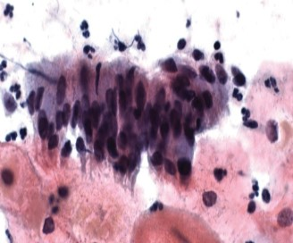
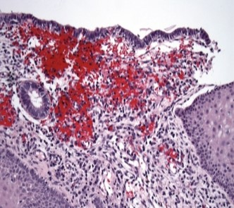
Arias-Stella Reaction
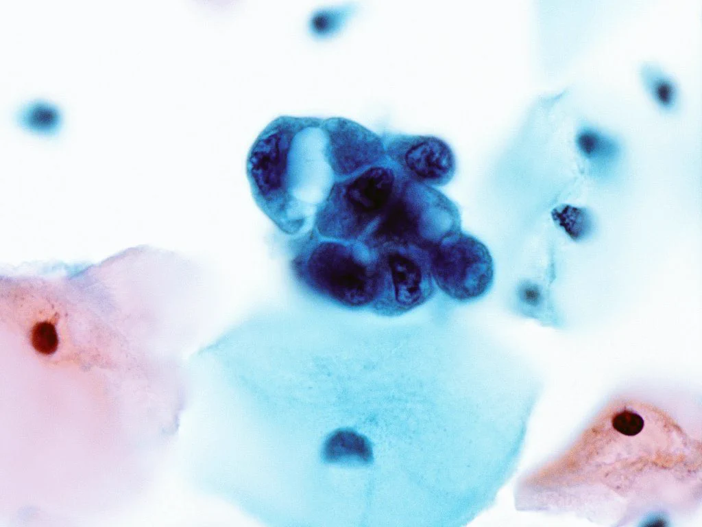
Abnormal Changes
Atypical Glandular Cells (AGC)
Endometrial Hyperplasia
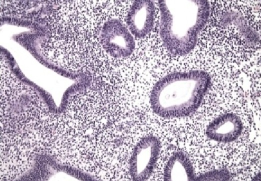
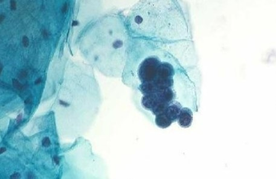
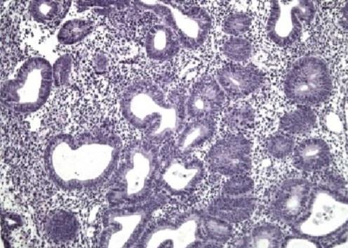
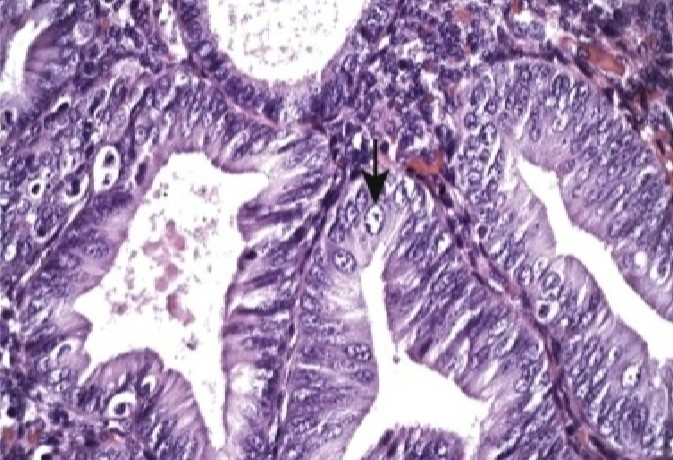
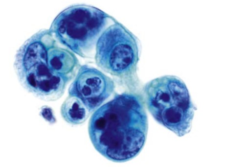
Endometrial Adenocarcinoma
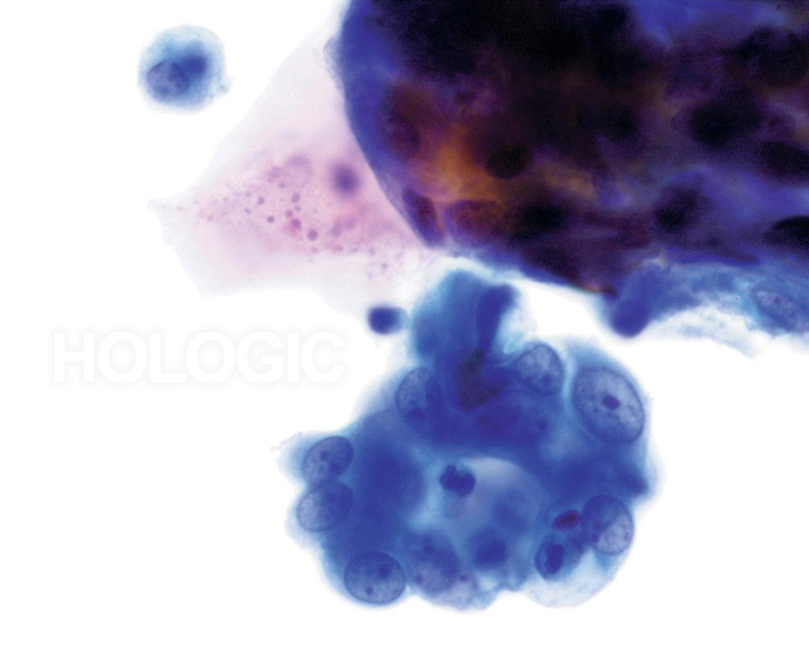
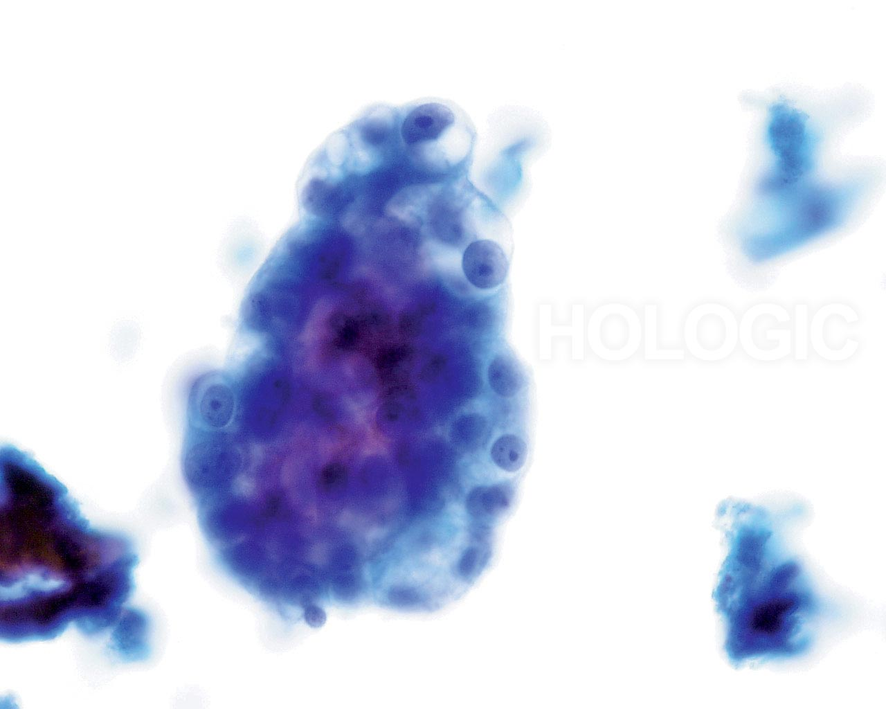
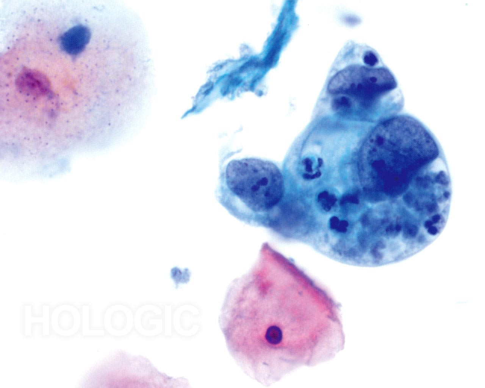
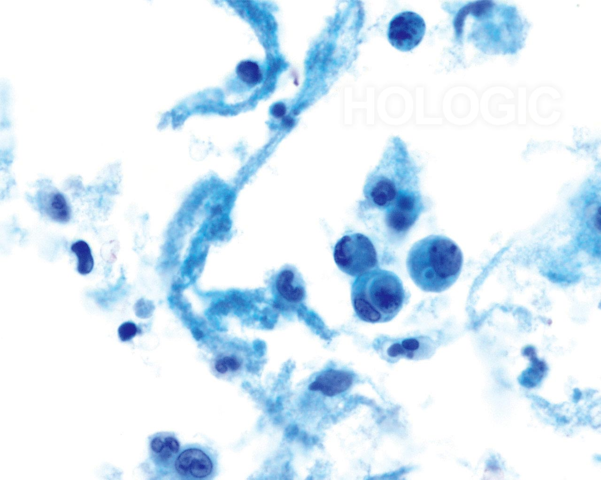
WHO Histologic Classifications
Endometrial Adenocarcinoma Variants
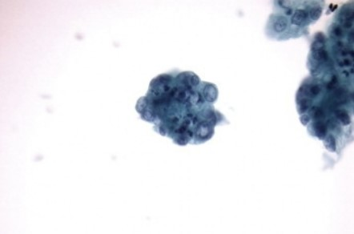
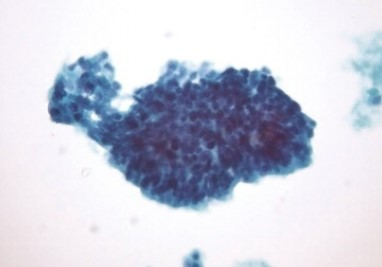
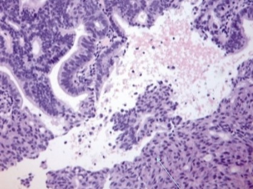
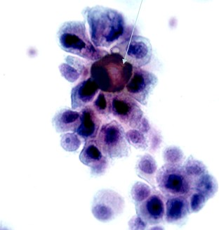
FIGO Staging System for Endometrial Cancer
Summary
Differential Diagnosis
| Entity | Distinguishing Features |
|---|---|
| Example | Describe the distinguishing features. |
Images